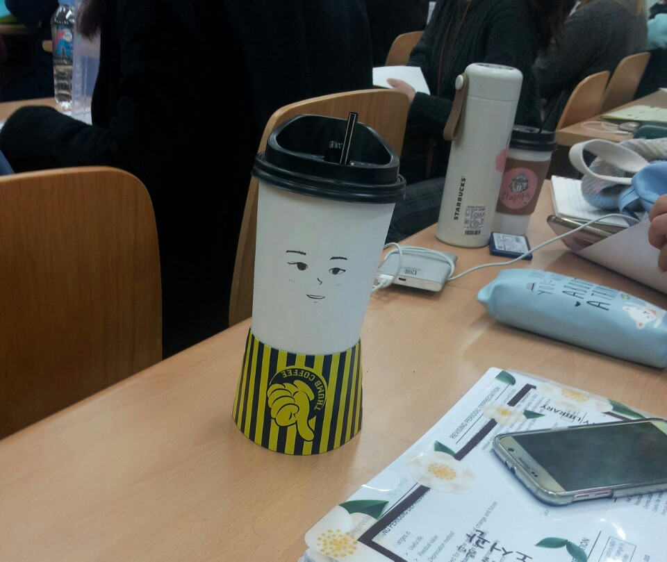
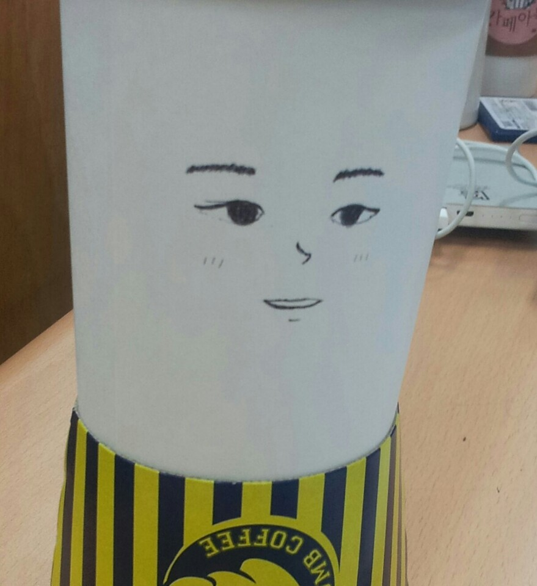
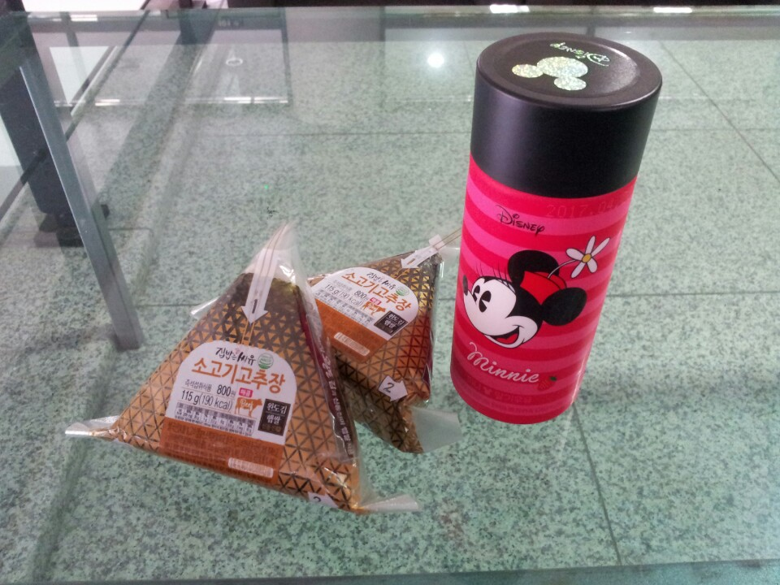

나는 아무 생각 없이 전공필수 수업에 들어왔다.
친구 두 명이 커피 한 컵씩을 들고 자리에 앉았고, 수업이 시작되었다.
내 옆에 앉은 친구가 지루했는지 펜을 들고 일회용 커피컵에 그림을 그리기 시작했다.
뭘 그리나 했더니 얼굴이었다.
왠지 진짜 사람같아서 찍어본 사진에 남은 모습이 그 컵의 마지막이었다.
▼ 줄무늬 치마

▼ 안녕?

오늘 왠지 쌀쌀하다 했더니 비가 왔다.
당연히 우산을 가지고 나오지 않은 나는 머무르던 건물 밖으로 나갈 수가 없었다.
그래서 나는 건물 내에 있는 편의점에서 끼니를 때우기로 했다.
오늘 저녁까지 학교에 있으려면 언젠가는 우산을 사야 했지만 우산을 사는 일은 굳이 미루고 뭘 먹을지 고민하기 시작했다.
5분 정도 고민하다가 컵라면 말고 삼각김밥 2개를 먹기로 했다.
참치마요 김밥 하나 소고기고추장 김밥 하나를 먹을까 하다가 참치마요는 밍밍할 것 같아서 소고기고추장 김밥으로 2개 샀다.
(나는 초등학생 때부터 소고기고추장을 가장 좋아했다.)
그러나 나는 다시 고민하기 시작했다. 오늘은 어떤 음료수를 마실까?
나는 아침을 먹지 않고 나왔기 때문에 삼각김밥 2개로는 충분하지 않을 것 같아서 우유류를 먹기로 결정하였다.
그렇다면 우유류 중에서는 어떤 것을 고를까?
나는 배고픔을 확실하게 해결할 수 있는 '덴마크 시리얼 우유'에 잠시 혹했으나 그것은 너무 걸쭉해서 김밥을 먹으면서 마시기에는 답답할 것 같았다.
그래서 나는 거의 맨 우유와 비슷한 것을 사기로 하였다.
그 중에서, 나는 디자인이 예쁘고 300원인가 세일하던 '미니마우스 딸기우유'를 최종적으로 구매하기로 결정했다.
나는 주섬주섬 산 것들을 들고 나와 푹신한 의자에 앉아 미니 딸기우유를 마시려고 했다.
그런데 뚜껑이 너무 안 열려서 돌려서 여는 것이 맞나 네이버에 검색해 보았다.
확인해보니 돌려서 여는 것이 맞았다.
확신을 얻은 나는 더 세게 뚜껑을 돌렸고 드디어 딸기우유를 맛볼 수 있었다.
그냥 평범한 딸기우유 맛이었다.
삼각김밥은 밥알이 약간 언 것처럼 딱딱했다.
소고기고추장맛도 오늘따라 좀 별로였지만 싼 값에 끼니를 때운 것에 만족했다.
편의점에 내려간 김에 우산을 파는지도 봤으면 좋았을 것을 또 까먹었다.
내가 건물을 나가야 할 때쯤 비가 그치기를 기도해본다.
▼ 고심 끝에 결정한 오늘의 점심
